Emma zieht ihren Wollpulli über den Kopf. Dabei knistert es, manchmal blitzt es sogar ein bisschen. Ihre Haare stehen ab und kleben am Pulli.
Wo hast du so etwas auch schon erlebt?
Wo sind wir? A Ladung und Stromkreis · B Stromstärke und Spannung · C Schaltungen · D Widerstand · E Energie und Kosten · F Wirkungen und Gefahren
| Emma zieht ihren Wollpulli über den Kopf. Dabei knistert es, manchmal blitzt es sogar ein bisschen. Ihre Haare stehen ab und kleben am Pulli. Wo hast du so etwas auch schon erlebt? |
Was glaubst du?
✎ allein · ein bis zwei Sätze · bevor ihr es ausprobiert
Warum stehen Emmas Haare ab und kleben am Pulli? Schreibe deine Vermutung auf. Es gibt hier kein Falsch.
Ich vermute, …
________________________________________________
________________________________________________
✎ gemeinsam mit der Lehrkraft · lesen und Bilder anschauen
Das Wichtigste 1. Ladungen. Jeder Körper enthält positive Ladungen (+) und negative Ladungen (−). Die negativen Ladungen heißen Elektronen. Nur die Elektronen können wandern – die positiven Ladungen bleiben an ihrem Platz.
2. Reiben. Reibt man zwei Körper aneinander, wandern Elektronen von einem Körper auf den anderen. Der eine bekommt Elektronen dazu und wird negativ, dem anderen fehlen sie – er wird positiv. Es entstehen keine neuen Elektronen. 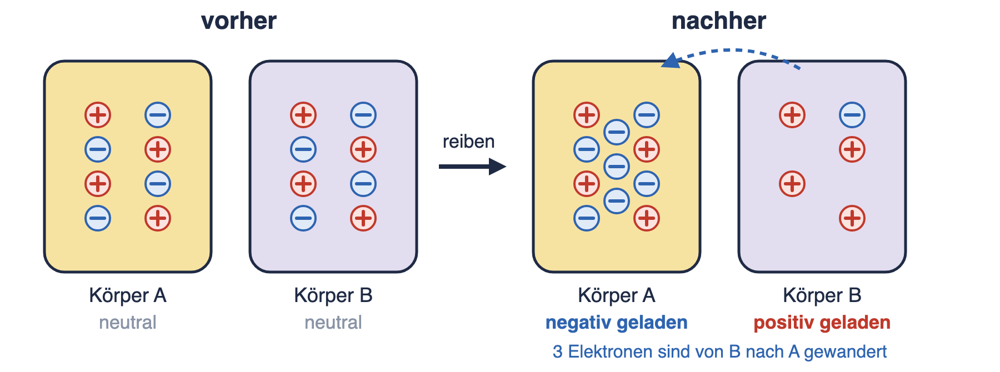 3. Kräfte. Gleiche Ladungen stoßen sich ab. Ungleiche Ladungen ziehen sich an. 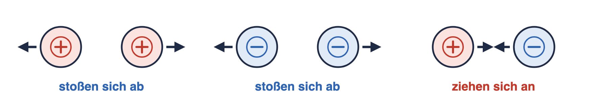 4. Influenz/Polarisation. Auch ein neutraler Körper wird von einem geladenen Körper angezogen. Seine Elektronen weichen ein Stück aus (oder werden herangezogen). Die positiven Ladungen bleiben stehen. Es kommen keine Ladungen dazu – der Körper bleibt insgesamt neutral. Neutral heißt also nicht „überall gleich viel + und −“, sondern „insgesamt gleich viel“. 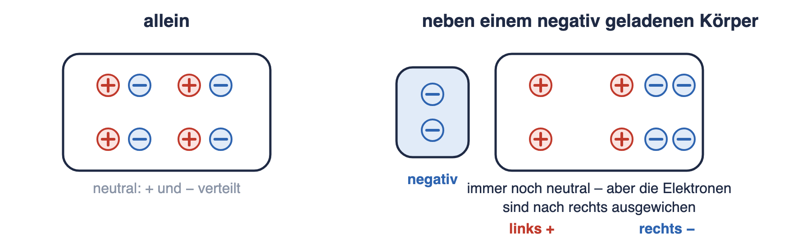 ◆ 5. Jedes Atom hat einen positiv geladenen Kern und eine Hülle mit Elektronen. Beim Reiben werden nur Elektronen aus der Hülle übertragen – der Kern bleibt an seinem Platz. Grenze der Bilder: + und − sind Zeichen auf dem Papier. Ladungen selbst kann man nicht sehen – nur, was sie bewirken. |
Kurz geprüft
✎ allein · ankreuzen (1 min)
Wie ist der Ballon geladen? Zähle + und −.
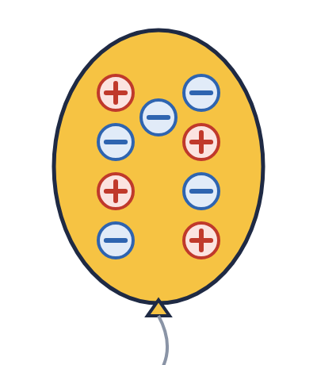 ☐ neutral |
☐ neutral | 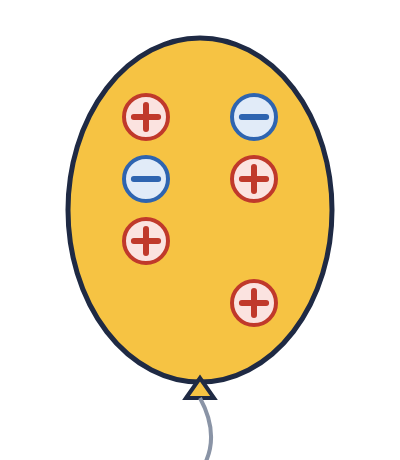 ☐ neutral |
✎ in der Gruppe · jeder ins eigene Skript · Material: Elektrostatik-Kit (durchsichtiger Acrylstab, schwarzer Hartgummistab, grauer PVC-Stab; Seidentuch, Kaninchenfell), 1 Luftballon mit Faden, Papierschnipsel
Gut zu wissen: Ein Luftballon, den man am Kaninchenfell reibt, ist danach negativ geladen. Der hängende Ballon ist deshalb euer Messgerät: Was er anzieht oder abstößt, verrät die Ladung des Stabs. |
V1 Reibt den Ballon 10-mal kräftig am Kaninchenfell. Haltet ihn knapp über die Papierschnipsel. Klebt ihn danach mit dem Faden an die Tischkante, sodass er frei hängt.
V2 Reibt den durchsichtigen Acrylstab mit dem Seidentuch. Nähert ihn langsam dem hängenden Ballon.
V3 Reibt den schwarzen Hartgummistab mit dem Kaninchenfell. Nähert ihn langsam dem hängenden Ballon.
V4 Probiert weitere Kombinationen aus: grauer PVC-Stab, Stab mit dem anderen Tuch reiben …
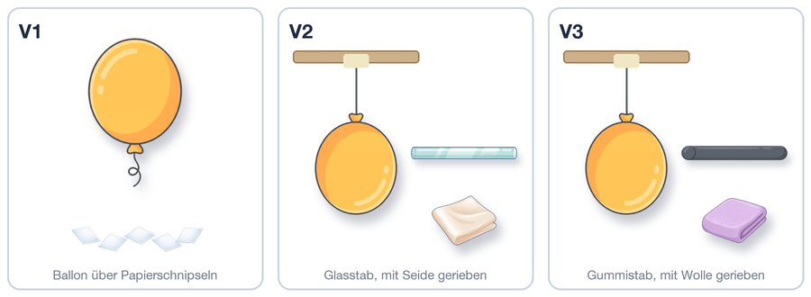
Das beobachte ich
| Versuch | Beobachtung |
| V1 Ballon und Schnipsel | ☐ ziehen sich an ☐ nichts ☐ stoßen sich ab |
| V2 Acrylstab (Seide) und Ballon | ☐ ziehen sich an ☐ nichts ☐ stoßen sich ab |
| V3 Hartgummistab (Fell) und Ballon | ☐ ziehen sich an ☐ nichts ☐ stoßen sich ab |
| V4 ____________ und Ballon | ☐ ziehen sich an ☐ nichts ☐ stoßen sich ab |
| V4 ____________ und Ballon | ☐ ziehen sich an ☐ nichts ☐ stoßen sich ab |
✎ allein · Animationen antippen und anschauen · Lücken füllen
Schau dir die Animation an – gern zweimal. Fülle dann die Lücken. Die Wörter im Kasten helfen dir.
Wörter: Elektronen · positiv · negativ · neutral · angezogen · abgestoßen · abgegeben · aufgenommen · unten · Influenz/Polarisation |
a) Ballon und Kaninchenfell
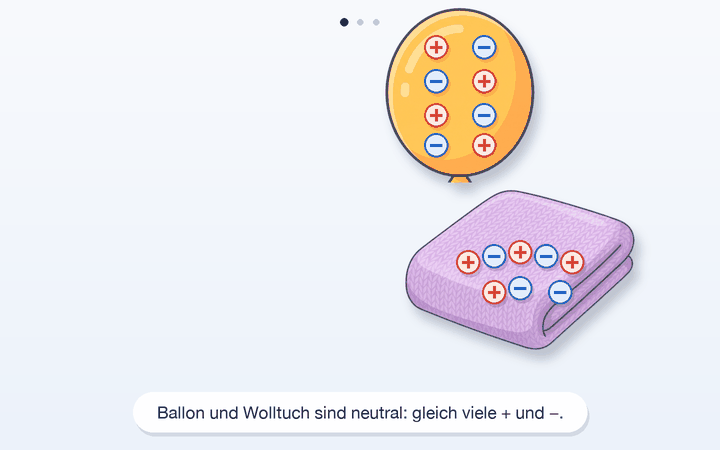
Beim Reiben wandern _________________ vom Fell auf den Ballon. Der Ballon hat dann Elektronenüberschuss – er ist ______________ geladen. Dem Fell fehlen Elektronen – es ist ______________ geladen.
b) Acrylstab und Seide (V2)
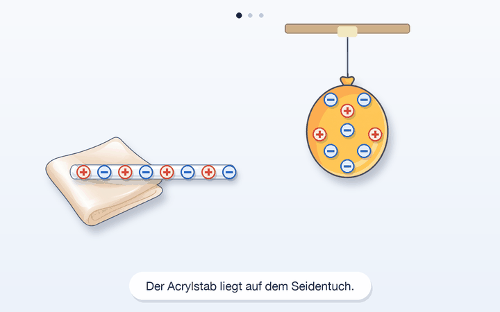
Im Versuch hat der Acrylstab den negativen Ballon ________________. Ungleiche Ladungen ziehen sich an – also ist der Acrylstab ______________ geladen. Beim Reiben hat er Elektronen an die Seide ________________.
c) Hartgummistab und Fell (V3)
Im Versuch hat der Hartgummistab den negativen Ballon _________________. Gleiche Ladungen stoßen sich ab – also ist der Hartgummistab ______________ geladen. Beim Reiben hat er Elektronen vom Fell ___________________.
d) Ballon und Papierschnipsel (V1)
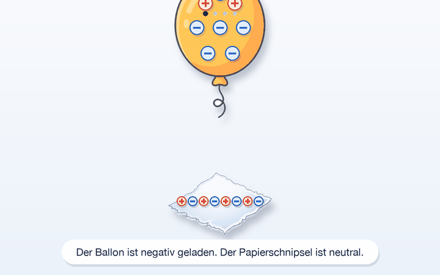
Die Schnipsel sind ______________. Der negative Ballon drückt die Elektronen im Schnipsel nach __________. Oben ist der Schnipsel dann positiv – deshalb wird er ________________. Das nennt man ________________________________.
Aufgabe 1 · Jetzt du
✎ allein · mit dem Stift ins Bild
Zeichne + und − ein und kreuze an. Bild 1 ist schon vorgemacht.
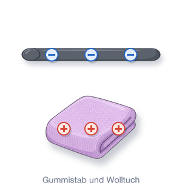 1 (Beispiel) Der Hartgummistab nimmt Elektronen vom Fell auf. ☐ ziehen sich an | 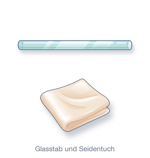 2 Der Acrylstab gibt Elektronen an das Seidentuch ab. ☐ ziehen sich an | 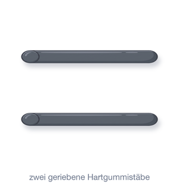 3 Beide Hartgummistäbe wurden mit Fell gerieben. ☐ ziehen sich an |
Aufgabe 2 · Stimmt das?
| Hat Paul recht? Kreuze an und begründe. Paul hat ☐ recht ☐ nicht recht, weil … Hilfe: Checkliste und Satzanfänge → ________________________________ ________________________________ ________________________________ ________________________________ ________________________________
|
✎ allein · erst vergleichen, dann Lücken füllen
Lies deine Vermutung bei „Was glaubst du?“. Was stimmt, was nicht? Verbessere dort in Grün. Fülle dann die Lücken.
Gut zu wissen: Reiben Haare und Wollpulli aneinander, nimmt die Wolle Elektronen von den Haaren auf. Welcher Stoff Elektronen abgibt, kann man sich nicht denken – das hängt vom Material ab. Darum steht es hier. |
Beim Ausziehen reiben Pulli und Haare aneinander. Dabei wandern _________________ von den Haaren auf den Pulli. Die Haare sind dann ______________ geladen, der Pulli ist ______________ geladen.
Die Haare stehen ab, weil alle Haare gleich geladen sind und sich ______________. Die Haare kleben am Pulli, weil sich ungleiche Ladungen ______________.
Es knistert, weil Elektronen als winziger __________ zurückspringen. Genauso klebt ein geriebener Luftballon an der Wand: Er ist geladen, und die neutrale Wand wird durch ________________________________ angezogen.
Ausblick: Beim Knistern springen Elektronen nur einmal kurz über. Was passiert, wenn Elektronen dauerhaft fließen? → nächste Stunde.
◆ Die Bilder im Infokasten und die Wirklichkeit
Erläutere: Vergleiche die Bilder mit + und − im Infokasten mit dem Material. Was zeigt das Bild gut – und was zeigt es nicht? Hilfe: Checkliste und Satzanfänge → ________________________________________________ ________________________________________________ ________________________________________________ ________________________________________________
Danach: Aufgabe mit Material auf der nächsten Seite (Gewitter). |
|